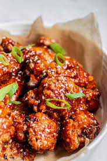

Korean Chicken

Description
Korean chicken, also known as Korean fried chicken, is a popular dish in Korea
that is made by coating chicken in a spicy sauce made with gochujang,
a fermented chili paste that is a staple ingredient in Korean cuisine
The chicken is usually double-fried, which gives it a light and crispy texture
The dish is typically served with a sweet and spicy sauce made from gochujang,
and can be enjoyed as a meal, an appetizer, or as an after-meal snack
Some popular variations of Korean chicken include Yangnyeom chicken, which is seasoned
with spices, sugar, and salt, and can be glazed with a soy garlic or red spicy sauce
.Korean fried chicken is highly popular in and outside of Korea,
and the Korean fried chicken industry has grown exponentially over the last few decades
Ingredients required to make Korean Fried Chicken
- 1.4 kg whole chicken (3 pounds), cut into pieces or chicken wings / drumsticks / thighs
- 2 tsp minced ginger
- 1 tsp fine sea salt
- 1/2 tsp ground black pepper
- 1 cup potato starch or corn starch
- Some cooking oil for deep frying (rice bran oil is recommended)
- Soy garlic sauce ingredients:
- 1/4 cup soy sauce
- 1/4 cup brown sugar
- 2 Tbsp rice wine or mirin
- 2 Tbsp minced garlic
- 1 Tbsp sesame oil
- 1 Tbsp sesame seeds
These steps required to make Korean Fried Chicken
- Combine the chicken with a salt water solution and let it sit overnight.
- Coat the chicken in a batter made with Korean fried chicken mix and cold water.
- Double fry the wings for extra crispiness.
- Toss the wings in a delicious gochujang sauce for an added kick of flavor.